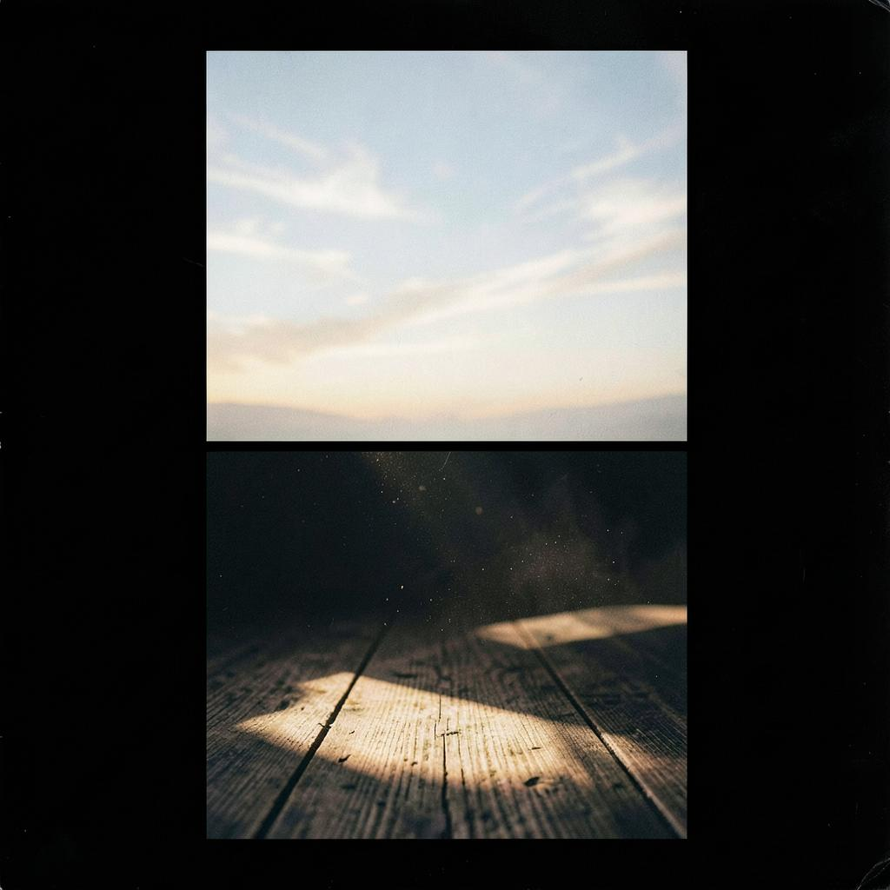

Now playing
La Sensibilité est la Fonction
Eden Yours
Tip: let the player queue — the next track starts on its own. That is how regeneration unfolds.
Listen continuously. It regenerates.
This library is meant to be played end to end. Queue the tracks: the longer you stay in continuous listening, the more regeneration settles in — aligned with Pure Sensitivity and Function before Structure.

Now playing
Eden Yours
Tip: let the player queue — the next track starts on its own. That is how regeneration unfolds.
Click a track, then keep going — regeneration rides the sequence.